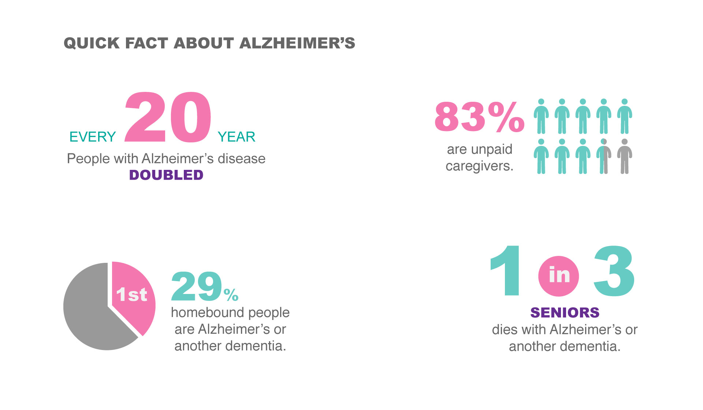
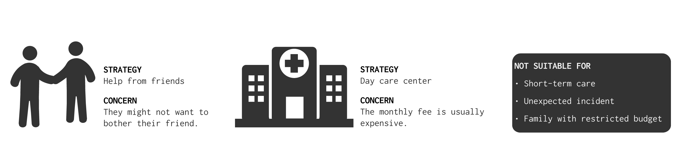
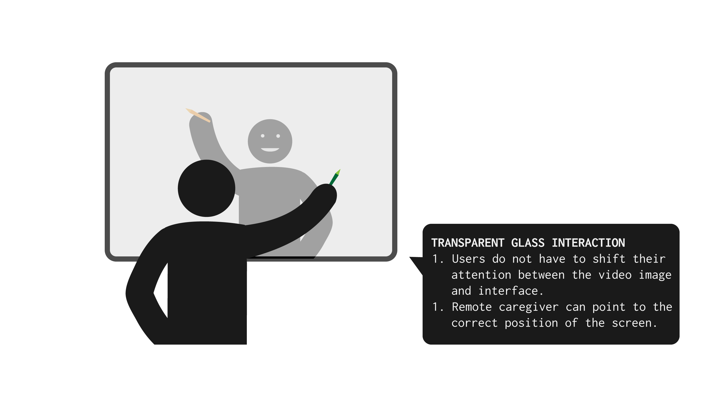

TouchIn is an on-demand, short-term & remote companion service for Alzheimer patients. Through remote caregivers and guided coloring activities, it brings warm friendship and creative expression to patients’ live, thus improving the wellbeing of patients.
Lead in one of the interviews
Final design ideation
Integrate materials to final paper
Software
Axure
Photoshop
Illustrator
UX Method
Interview
Affinity walls
Prototyping
Usability test
CHISDC2016_TouchIn from Sharon Liang on Vimeo.
Alzheimer’s disease is the sixth leading cause of death in the U.S. By 2020, there will be 5.7 millions of elderly people in the U.S. with Alzheimer’s disease.
Given the growing number of people suffering from Alzheimer’s disease, the health care of patients with Alzheimer’s disease becomes an important issue. These patients require long-term care. The intensive caregiving process increases the burden of these caregivers and impair the quality of life of both patients and their families.
Our restricted understanding of the Alzheimer’s disease meant that we need to gain more insight directly from people with Alzheimer’s disease and their families. We did six -hour interviews with four caregivers and patients. Our interviews revealed many insights more than our primary understanding of Alzheimer’s disease:
Alzheimer's patients were eager to have social interaction with others but faced many challenges.
“He enjoys being out where other people are. Even though he's not involved in what's going on.”
Caregivers were under big pressure, and had to give up their original job and social life.
“I couldn’t pursue my career, I couldn’t pursue friends and things...but I have my own life.”
We also found that the common strategies to cope with these challenges did not serve as an ideal solution:
Based on the previous finding, we aimed to proposed a solution that can lower caregivers’ burdens and increase patients’ social interaction at the same time.
We proposed an on-demand caregiver-sourcing: a platform that provides short-term and remote caregivers to patients with Alzheimer’s disease.
A subsequent issue would be what are the activities that is suitable for these remote caregivers to do during their companion with the patients. The activities I found during my exploration converged to three main categories:
The activity should be simple enough without complicated planning steps, such as visiting a garden or watching a therapy dog.
The activity should have a certain degree of repetition or predictability, such as interacting with a speaking toy that repeats what it receives.
The activity should still be creative and stimulating, such as coloring or jigsaw.
Based on these findings, we refined our solution to be an interactive tablet with guided drawing app that can be connected to the short-term remote caregivers that will facilitate the coloring activities.
There are myriad research that help us to find the suitable remote caregiver, such as using a rating system. However, we want to focus more on the interaction of our proposal, so we assumed to use the most adopted way to recruit remote caregivers.
Based on our previous research, a good activities for people with Alzheimer’s disease should be simple, predictable as well as stimulating. Coloring fulfilled these three criteria. We ran a two-hour observation in a day center for people with Dementia, and we found that coloring was a daily activity they had.
Our first prototype is a system containing a video camera, a screen that shows the remote caregiver and an application on the ipad for patients to color pictures.
Our first prototype is a system containing a video camera, a screen that shows the remote caregiver and an application on the ipad for patients to color pictures.
We tested the first version of our prototype, and found that:
Participants had difficulties in learning how to use the interface even after a long period of learning.
Participants showed a willingness to interact with people in the screen after a warm-up session.
Participants needed to shift their attentions between the iPad screen and the laptop screen, which might be overloading.
Most of the challenges our participants faced were come from the unfamiliarity with the technology and a constant attention shift between the iPad screen and the laptop screen. Therefore, we moved the images of remote caregivers on the same screen where participants can draw on. We changed our design because we want to provide an experience close to face-to-face interaction.
One of the feedback we recieved was that "if you have a such interesting interface, why only let the Alzheimer's patients color?" We have thought about different activities before. However, we decided to focus on coloring first because it is an common activity that fulfills all the criteria we found in our research and observation. Although we only focused on the coloring task in this project, we expected that our design could act as an interface for different kinds of activities. We hope that through our design, technology is no longer an obscure puzzle to the people with Alzheimer’s disease, but serves as an approach to connect with the outer world.